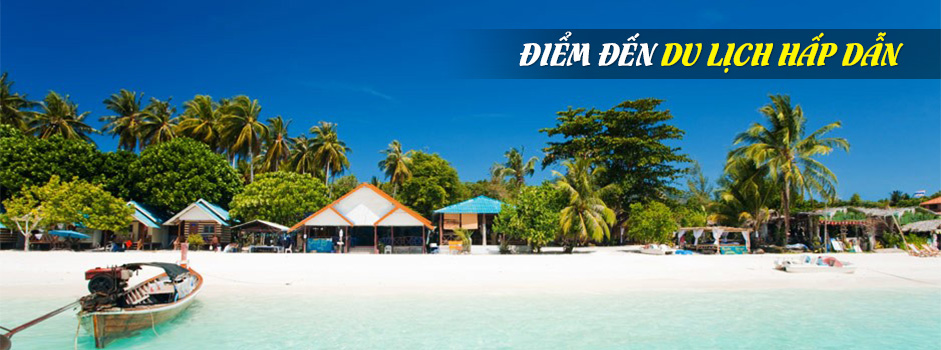

|
 |
Thành phố Nha Trang là một trung tâm du lịch lớn của cả nước với nhiều danh lam thắng cảnh nổi tiếng, điều kiện thiên nhiên ưu đãi cả về vị trí, cảnh quan, khí hậu, cùng với nền tảng về lịch sử, nhân văn của mình. Nha Trang – Khánh Hoà có khả năng phát triển nhiều loại hình du lịch đa dạng. Nằm ở vị trí trung tâm tỉnh Khánh Hòa, thành phố Nha Trang có diện tích 251 km2, bao gồm 27 xã, phường và 19 hòn đảo, với trên 2.500 hộ và khoảng 15.000 người sống trên các đảo. Đảo lớn nhất là Hòn Tre rộng 36km2 nằm che chắn ngoài khơi khiến cho vịnh Nha Trang ( nằm trong số 29 vịnh đẹp nhất trên thế giới) trở nên kín gió và êm sóng. Nơi đây được nhiều du khách mệnh danh là “Hòn ngọc viễn đông” nhờ những bãi tắm đẹp, con đường nhựa xanh sạch, các ngôi biệt thự ẩn mình trong rừng hoa và cây xanh |